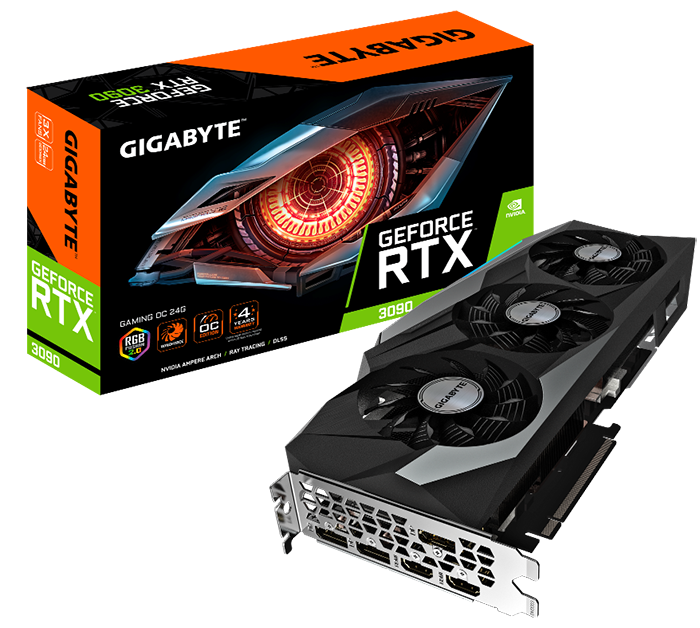
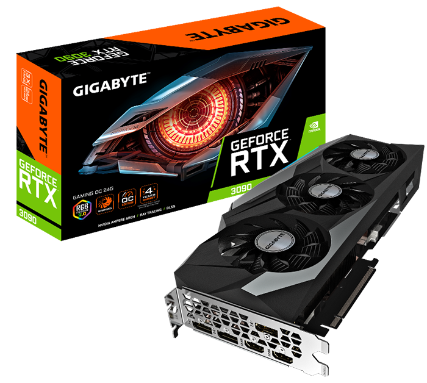

TXARTEL GRAFIKOA
Txartel grafikoa base plakako edo oinarrizko plakako zirkuituetako batean konektatzen den barruko osagaia da. Bere helburu nagusia monitoreari azaldu behar diren datuak zuzen bidaltzea da. Txartelek ere memoria bat dute, eta hainbat eta handiagoa izan memoria hori hobeagoak izango dira grafikoak eta koloreak jolasterakoan.
Txartel grafikoak lau funtzio nabarmen ditu: CPU-aren datuak prozesatu, monitorearekin sintonizatu, irudia harrapatu eta deskodetu. Testuak eta irudiak erregulatzeko eta determinatzeko ordenagailuaren osagai arduraduna da. Txartelaren mota ordenagailuan eragina du, irudiaren kalitatea determinatuko du bideojokoetan, bideo eta irudi edizioan eta 3D funtzionalitatean.
OSAGAIAK
Bideojokoetan txartel grafikoa garrantzi asko dauka. Txartel grafiko txar batekin oso esperientzia txarra edukiko duzu, jokoak ez du kargatuko, gaizki ikusiko da… Hori nolabait konpontzeko, grafikoak jaitsi ahal dituzu, baina horrela jokoaren edertasuna asko galtzen da. Onena diru pixka bat gehiago ordaintzea da jokoaren grafikoak ahalik eta gehien gozatzeko
Txartel Grafiko asko daude merkatuan eta horrekin batera prezio ezberdin asko ere. Prezio hauek 120€-tik 10.000€-tara doaz, baina 500-600€ ordainduta txartel nahiko indartsua lortu ahal dezakezu.
 
